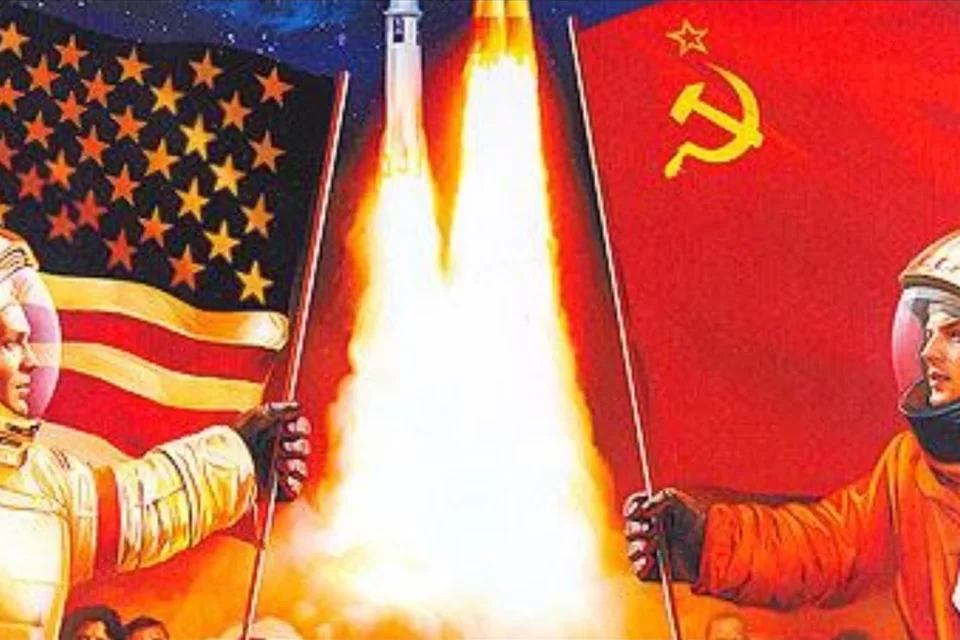
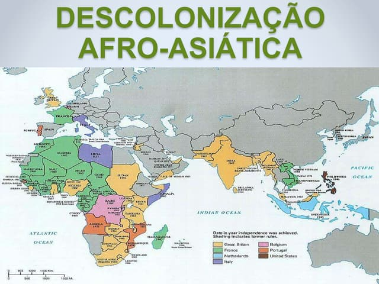
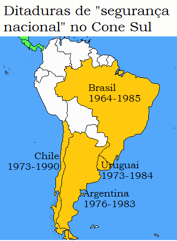

A Guerra Fria foi um período de tensão política e ideológica entre os Estados Unidos (EUA) e a União Soviética (URSS), que durou de 1947 a 1991. Ambos os países, com ideologias opostas — capitalismo e comunismo —, disputavam a influência global sem se enfrentarem diretamente em combate. O mundo foi dividido em dois blocos: o ocidental, liderado pelos EUA, e o oriental, sob a liderança soviética. A corrida armamentista, a ameaça de uma guerra nuclear e conflitos indiretos, como a Guerra da Coreia e a Guerra do Vietnã, marcaram essa fase de competição por poder. Além disso, a disputa pela supremacia tecnológica e espacial também foi expressa na corrida espacial, com eventos como o lançamento do satélite soviético Sputnik e a chegada do homem à Lua pelos EUA.
Durante o mesmo período, as colônias na África e na Ásia iniciaram processos de descolonização, buscando independência das potências europeias. Motivadas pelos ideais de autodeterminação e influenciadas pelo enfraquecimento das nações colonizadoras após a Segunda Guerra Mundial, essas colônias começaram a conquistar sua independência. No entanto, o processo de descolonização foi muitas vezes marcado por conflitos violentos e guerras civis, como aconteceu na Argélia e no Congo. Na Ásia, nações como Índia e Indonésia também obtiveram sua independência, mas enfrentaram desafios significativos para construir suas novas nações. Além disso, tanto EUA quanto URSS tentaram influenciar esses países recém-independentes, aumentando a rivalidade da Guerra Fria.
Na América Latina, a Guerra Fria impactou diretamente a política interna de vários países, levando à instalação de ditaduras militares no Cone Sul. Entre as décadas de 1960 e 1980, países como Brasil, Argentina, Chile e Uruguai sofreram golpes militares que resultaram em regimes autoritários, frequentemente apoiados pelos EUA no contexto da Doutrina de Segurança Nacional. O objetivo era combater a expansão do comunismo na região. Esses regimes foram marcados pela repressão, censura, tortura e desaparecimento de opositores políticos. Em países como o Chile, sob o governo de Augusto Pinochet, e na Argentina, com a Junta Militar, o impacto foi devastador para a sociedade, deixando cicatrizes profundas, como as "desaparições" forçadas e a violação dos direitos humanos.
A Guerra Fria começou a se dissolver no final da década de 1980, com as reformas promovidas por Mikhail Gorbachev na URSS, como a Perestroika (reestruturação econômica) e a Glasnost (abertura política). A queda do Muro de Berlim, em 1989, simbolizou o colapso do bloco comunista, culminando com a dissolução da União Soviética em 1991 e o fim do conflito bipolar. O mundo, então, entrou em uma nova era de relações internacionais, com os EUA se consolidando como a única superpotência global.